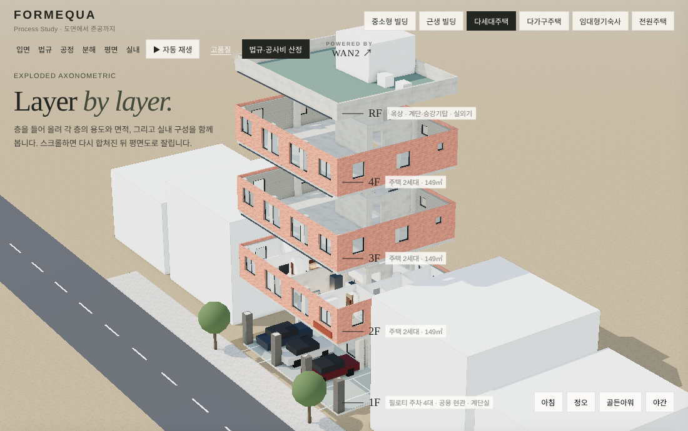

04 / From drawing to site
ZONING · PARKING · SCHEDULE · INTERIOR
대지와 용도지역에서 시작해 규모와 주차 대수를 검토하고, 공정의 시간 위에 건물을 세운 뒤, 단면과 평면으로 구성을 살피고 그 안으로 걸어 들어갑니다. 장면과 주차를 직접 탐색하며 형태와 시간, 숫자를 함께 읽는 연구입니다.

스크롤 연구 열기 ↗초기 스터디 이미지 · 6 building types학습·사전검토용 연구 화면이며 인허가 판단을 대신하지 않습니다.